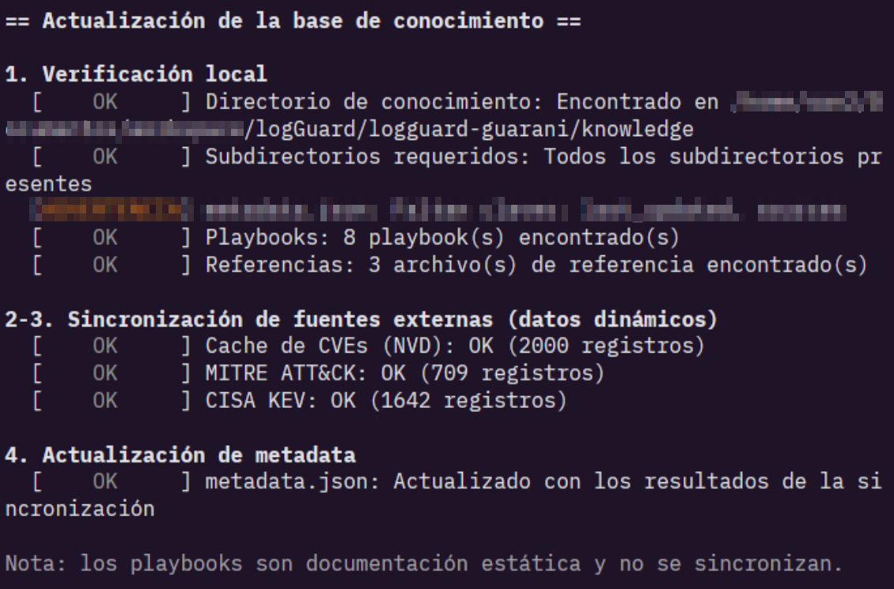
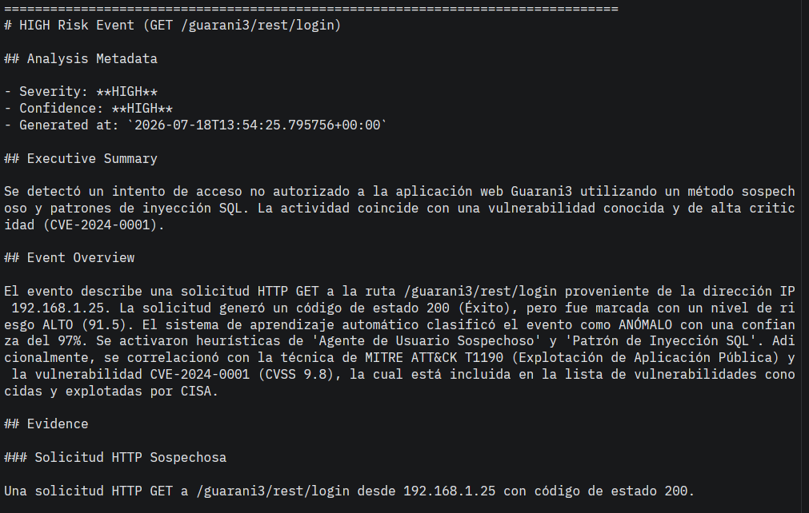
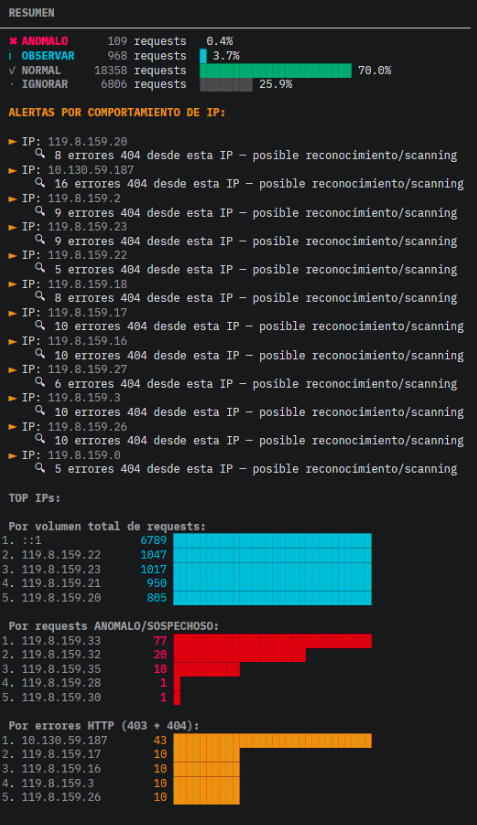

Descripción general
LogGuard Guaraní es un motor de análisis defensivo offline para logs Apache, pensado originalmente para el ecosistema SIU Guaraní y extensible a otras aplicaciones universitarias. Transforma eventos HTTP crudos en información accionable para analistas SOC, combinando detección heurística, Machine Learning y enriquecimiento con inteligencia de amenazas.
La versión 3.0 reemplaza el analizador rule-based original por un pipeline completo de análisis y razonamiento: cada evento atraviesa etapas de parseo, heurísticas, scoring, clasificación, un modelo SVM, enriquecimiento con MITRE ATT&CK / CVE / CISA KEV, y — para los eventos de mayor riesgo — un agente SOC que interpreta el evento enriquecido y redacta un reporte técnico.
Características principales
- Parseo completo del Apache Combined Log Format
- Detección heurística: SQL Injection, Path Traversal, Scanner/Reconocimiento, Error Abuse, User-Agent sospechoso, enumeración de directorios, URLs anómalamente largas, requests inválidos
- Risk Scoring numérico (0–100) con mapeo a niveles LOW MEDIUM HIGH CRITICAL
-
Clasificación de ataque:
INJECTION,PATH_TRAVERSAL,SCANNER,ERROR_ABUSE,DESCONOCIDO - Clasificador SVM complementario con predicción y nivel de confianza
- Base de conocimiento local: MITRE ATT&CK, NVD CVE, CISA KEV, referencias OWASP y Apache
- Agente SOC (Google ADK) que analiza eventos enriquecidos de alto riesgo y redacta recomendaciones
- Exportación a Markdown, JSON y JSONL
- Empaquetado en Docker, sin necesidad de instalar dependencias localmente
Requisitos
# Python 3.11 o superior
python3 --version
# Dependencias definidas en requirements.txt
pip install -r requirements.txt¿Por qué otro analizador de logs?
El mercado ya tiene SIEMs empresariales maduros — Splunk, Elastic Security, Microsoft Sentinel, entre otros. LogGuard Guaraní no compite con ellos ni intenta reemplazarlos. Nace de un problema concreto y acotado: los servidores del ecosistema SIU Guaraní en un entorno universitario, con presupuesto y personal limitados para operar un SIEM comercial.
El proyecto existe, en cambio, para cubrir un conjunto de objetivos distintos:
| Objetivo | Descripción |
|---|---|
| Investigación | Explorar cómo aplicar detección heurística + ML + LLM a un problema de seguridad real y acotado |
| Educación | Servir como material de estudio para estudiantes y docentes de ciberseguridad |
| Arquitectura explicable | Demostrar que un sistema de detección puede ser transparente sin sacrificar sofisticación |
| Análisis offline | Operar en entornos institucionales con restricciones de red, presupuesto o privacidad |
| IA aplicada a ciberseguridad | Explorar el rol correcto de un LLM en un pipeline de seguridad: interpretar, no detectar |
| Conocimiento de dominio SIU | Incorporar contexto específico del ecosistema SIU Guaraní que un SIEM genérico no tiene |
| Experimentación con arquitecturas SOC modernas | Probar patrones de agentes (Google ADK) aplicados a generación de reportes de seguridad |
Principios de diseño
LogGuard Guaraní está diseñado siguiendo un conjunto de principios que condicionan cada decisión de arquitectura, desde la separación de etapas del pipeline hasta la forma en que el agente SOC redacta sus reportes.
Offline-first
El análisis y el enriquecimiento se ejecutan siempre contra una base de conocimiento local. La conectividad es un paso explícito y separado, nunca un requisito del análisis.
Defensive by Design
El sistema solo analiza. Nunca actúa sobre la infraestructura monitoreada: no bloquea, no modifica, no responde automáticamente.
Explainable AI
Ninguna detección es una caja negra. Cada score, cada clasificación y cada recomendación del agente SOC está respaldada por evidencia trazable.
Modular Architecture
Cada etapa del pipeline es un componente independiente y reemplazable, con una responsabilidad única y una interfaz de datos clara hacia la siguiente etapa.
Domain Knowledge
El motor incorpora conocimiento específico del ecosistema SIU Guaraní — rutas legítimas, flujos SSO/SAML, versiones conocidas — para reducir el ruido de un analizador genérico.
Human-readable Reports
La salida final está pensada para ser leída por un analista, no para alimentar un pipeline automático de respuesta.
Deterministic Detection Pipeline
Parser, heurísticas, scoring, ML y clasificación son deterministas: el mismo log produce siempre el mismo resultado.
Separation between Detection and Reasoning
La detección nunca depende de un LLM. El razonamiento del agente SOC ocurre después, sobre eventos ya clasificados. Ver detalle →
Privacy-preserving
El análisis no envía logs a servicios externos. Solo la sincronización explícita de la base de conocimiento requiere red, y no transmite datos institucionales.
Educational Architecture
Pensado para ser leído y entendido: cada etapa es lo suficientemente simple como para servir de material de estudio.
Instalación
Entorno local
python3 -m venv .venv
source .venv/bin/activate
pip install -r requirements.txtEjecución básica
# Análisis básico
python3 src/logguard_guarani.py access.log
# Mostrar solamente eventos relevantes
python3 src/logguard_guarani.py access.log --solo-anomalos
# Ejecutar clasificación ML + agente SOC
python3 src/logguard_guarani.py access.log --razonar
# Exportar eventos enriquecidos a JSONL
python3 src/logguard_guarani.py access.log \
--razonar \
--exportar-json outputs/eventos.jsonlpython3 src/logguard_guarani.py \
--actualizar-conocimiento \
--onlineArquitectura del sistema
LogGuard Guaraní se organiza en capas, cada una con una responsabilidad única. Los datos fluyen en una sola dirección — de abajo hacia arriba — desde el log crudo hasta el reporte final consumido por un analista.
Figura — Vista conceptual por capas de LogGuard Guaraní. Cada capa solo conoce a la inmediatamente inferior.
Etapas del pipeline: qué reciben, qué producen y por qué existen
A continuación se detalla cada bloque del pipeline con nivel de responsabilidad único — pensado para alguien que va a leer o modificar el código fuente.
| Etapa | Recibe | Produce | Por qué existe |
|---|---|---|---|
| Parser |
Línea cruda de access.log (Apache
Combined Log Format)
|
AnalysisEvent |
Normaliza texto no estructurado en un objeto tipado que el resto del pipeline puede consumir sin volver a parsear texto |
| Heuristics | AnalysisEvent |
EventEvidence (lista de hallazgos)
|
Aplica reglas explícitas y auditables sobre URL, User-Agent y status code; cada regla es inspeccionable de forma aislada |
| Risk Scoring | EventEvidence |
Score numérico 0–100 | Convierte evidencia heterogénea en un valor comparable, para poder priorizar entre múltiples eventos |
| Attack Classification | EventEvidence + score |
Categoría de ataque (INJECTION,
SCANNER, …)
|
Le da al analista una etiqueta accionable, no solo un número |
| Machine Learning (SVM) | Score, status, tamaño de respuesta, longitud de URL, método HTTP |
prediction +
confidence
|
Aporta una segunda señal, estadística, independiente de las reglas heurísticas escritas a mano |
| Risk Mapping | Score + clasificación + salida del SVM |
RiskLevel (LOW / MEDIUM / HIGH /
CRITICAL)
|
Traduce señales numéricas dispersas en un nivel de criticidad único y accionable |
| EnrichedEvent | Todo lo anterior |
Objeto consolidado EnrichedEvent
|
Punto de unión entre el Detection Pipeline (determinístico) y el Reasoning Pipeline (interpretativo) |
| Knowledge Enrichment | EnrichedEvent |
KnowledgeContext (MITRE, CVEs, KEV)
|
Contextualiza el evento contra inteligencia de amenazas real, sin salir a Internet |
| SOC Agent (Google ADK) |
EnrichedEvent +
KnowledgeContext
|
AgentAnalysis |
Redacta una interpretación en lenguaje natural de evidencia ya producida — nunca decide qué es un ataque |
| SOC Report | AgentAnalysis |
Reporte en Markdown / JSON / JSONL | Formato final consumible por un humano o por otra herramienta |
Detección vs. Razonamiento
El pipeline se divide en dos bloques con propiedades radicalmente distintas. Confundirlos — o acoplarlos — sería el error de diseño más grave que podría cometer este proyecto.
Pipeline de Detección — determinístico
- Parser
- Heurísticas
- Risk Score
- ML (SVM)
- Clasificación de Ataques
Pipeline de Razonamiento — interpretativo
- Knowledge Enrichment
- Agente SOC
- Recomendaciones
- SOC Report
| Propiedad | Pipeline de Detección | Pipeline de Razonamiento |
|---|---|---|
| Determinístico | Sí — mismo input, mismo output siempre | No — depende de la salida de un LLM |
| Requiere LLM | Nunca | Sí, para interpretar y redactar |
| Costo computacional | Bajo — se ejecuta sobre cada línea del log | Alto — se invoca solo para eventos de riesgo alto/crítico |
| Auditable regla por regla | Sí | Solo a nivel de evidencia de entrada, no de la redacción del LLM |
| Responsabilidad | Decidir qué es sospechoso y cuánto riesgo tiene | Explicar por qué importa y qué hacer al respecto |
Esta separación es también lo que hace posible el ahorro de tokens mencionado en el short paper: como la clasificación ya existe antes de tocar al LLM, el sistema puede decidir con certeza cuáles de todos los eventos ameritan gastar una llamada a Gemini, en lugar de enviarle cada línea del log.
Pipeline completo
LogGuard Guaraní procesa cada línea de log a través de un pipeline de etapas encadenadas. Cada etapa recibe un objeto estructurado, agrega información y produce un nuevo modelo de datos para la siguiente fase, sin modificar la evidencia original.

Figura — Pipeline de análisis de LogGuard Guaraní v3.0, desde el log crudo hasta el reporte SOC. Ver código del diagrama →
Las etapas se agrupan conceptualmente en dos grandes bloques: un Detection Pipeline, puramente determinístico y basado en reglas y ML, y un Reasoning Pipeline, donde el agente SOC interpreta el resultado del primero.
Figura — Separación entre el pipeline de detección (reglas + ML) y el pipeline de razonamiento (agente SOC).
Etapas del pipeline
-
Parser — procesa Apache Combined Log
Format y genera un
AnalysisEvent. core/parser.py - Heuristic Detection — reglas defensivas que producen evidencia sobre el evento. core/heuristics.py
- Risk Scoring — score acumulativo 0–100 en base a la evidencia heurística. core/scoring.py
- Attack Classification — asigna una categoría de ataque al evento. core/classifier.py
- Machine Learning (SVM) — clasificador complementario con predicción y confianza. ml/svm_model.py
-
Risk Mapper — convierte el score
numérico en un
RiskLevel(LOW/MEDIUM/HIGH/CRITICAL). core/risk_mapper.py - Knowledge Enrichment — agrega contexto MITRE ATT&CK, CVEs y CISA KEV al evento. knowledge/enrichment.py
-
SOC Agent — interpreta el
EnrichedEventy redacta el reporte técnico. soc_agent/ - Report — renderizado final en Markdown, JSON o JSONL. core/report_builder.py
Parser
El parser procesa cada línea del log en
Apache Combined Log Format y construye el
modelo AnalysisEvent, que representa el evento
durante todo el resto del pipeline.
Campos extraídos
| Campo | Descripción |
|---|---|
timestamp |
Fecha y hora del request |
source_ip |
IP de origen |
method |
Método HTTP (GET, POST, DELETE…) |
url |
URL y parámetros del request |
status_code |
Código de respuesta HTTP |
bytes |
Tamaño de la respuesta |
referer |
Referer HTTP |
user_agent |
User-Agent completo |
Con estos campos se genera un AnalysisEvent, el
objeto que atraviesa el resto del pipeline y sobre el cual
se van agregando heurísticas, score, clasificación y, más
adelante, contexto de inteligencia de amenazas.
Heurísticas
El motor analiza URLs y parámetros HTTP, User-Agent, códigos de respuesta y comportamiento por IP mediante un conjunto de heurísticas defensivas. Cada heurística produce evidencia; ninguna toma decisiones finales por sí sola — esa responsabilidad recae en el Risk Scoring y el Risk Mapper.
| Heurística | Qué detecta |
|---|---|
| SQL Injection | Patrones de inyección SQL en URL y parámetros |
| Path Traversal |
Secuencias de escape de directorio
(../, %2e%2e, etc.)
|
| Scanner / Reconocimiento | User-Agents de herramientas de escaneo conocidas |
| Error Abuse | Volumen anómalo de códigos de error desde una misma IP |
| Suspicious User-Agent | User-Agents desconocidos, vacíos o falsificados |
| Directory Enumeration | Diversidad anómala de paths accedidos por una IP |
| Long URL Detection | URLs anómalamente extensas sin contexto legítimo |
| Invalid Requests | Requests malformados o fuera de especificación |
Tipos de amenazas resultantes de la evidencia acumulada:
SQL Injection, Path Traversal,
Scanner / Reconocimiento,
Error Abuse y
Actividad desconocida.
Puntuación de Riesgo (Risk Scoring)
Cada evento recibe un score numérico acumulativo, en un rango de 0 a 100, calculado a partir de la evidencia producida por las heurísticas. El score no reemplaza la evidencia: es información adicional para priorizar eventos.
Risk Mapper
El score se transforma luego en un nivel de criticidad discreto mediante el Risk Mapper:
| Nivel | Uso sugerido |
|---|---|
| LOW | Sin acción inmediata; queda registrado |
| MEDIUM | Revisión periódica |
| HIGH | Revisión manual prioritaria |
| CRITICAL | Atención inmediata — dispara enriquecimiento y agente SOC |
core/soc_orchestrator.py)
activan la etapa de enriquecimiento y el agente SOC, lo que
evita el costo de procesar con un LLM cada línea del log.
Clasificación de Ataques (Attack Classification)
A partir de la evidencia heurística, el motor clasifica cada evento en una categoría de ataque. Esta clasificación determina, junto al score, cómo se prioriza y contextualiza el evento en etapas posteriores.
| Categoría | Descripción |
|---|---|
INJECTION |
SQL Injection u otras técnicas de inyección en URL/parámetros |
PATH_TRAVERSAL |
Intentos de acceso a rutas fuera del directorio esperado |
SCANNER |
Actividad de escaneo o reconocimiento automatizado |
ERROR_ABUSE |
Explotación de comportamiento mediante abuso de errores HTTP |
DESCONOCIDO |
Evidencia insuficiente para una categoría específica |
Aprendizaje Automático (Machine Learning)
LogGuard incorpora un modelo SVM (Support Vector Machines) como señal complementaria al motor heurístico. Recibe características extraídas de las etapas anteriores del pipeline:
- Score de riesgo
- Status HTTP
- Tamaño de la respuesta
- Longitud de la URL
- Método HTTP
Y produce dos salidas:
| Salida | Descripción |
|---|---|
prediction |
Predicción del clasificador sobre la naturaleza del evento |
confidence |
Nivel de confianza asociado a la predicción |
Base de Conocimiento e Inteligencia de Amenazas
LogGuard posee una base de conocimiento completamente offline, utilizada para enriquecer los eventos de mayor riesgo con contexto de inteligencia de amenazas.
Fuentes integradas
| Fuente | Uso |
|---|---|
| MITRE ATT&CK | Asociación de tácticas y técnicas utilizadas por atacantes |
| NVD CVE Database | Identificación de vulnerabilidades relacionadas |
| CISA KEV | Determinación de si una vulnerabilidad está siendo explotada activamente |
| OWASP references | Contexto de buenas prácticas y vectores de ataque conocidos |
| Apache references | Documentación técnica del servidor Apache |
| Severity matrices | Criterios de severidad para el mapeo de riesgo |
| Playbooks | Guías de respuesta usadas como contexto por el agente SOC |
local
· offline)] C[NVD CVE Database] --> KB K[CISA KEV] --> KB O[OWASP references] --> KB KB --> EN[Knowledge
Enrichment] EN --> EE[EnrichedEvent] U["Knowledge
Updater
(--actualizar-conocimiento --online)"] -.sincroniza bajo demanda.-> KB classDef src fill:#f0f4f8,stroke:#1a5276,stroke-width:1px,color:#1a1a1a,font-family:Inter,font-size:13px; classDef kb fill:#1e1e2e,stroke:#c0392b,stroke-width:1.5px,color:#cdd6f4,font-family:IBM Plex Mono,font-size:12px; classDef out fill:#fdf2f2,stroke:#c0392b,stroke-width:1px,color:#1a1a1a,font-family:Inter,font-size:13px; class M,C,K,O src; class KB kb; class EN,EE out; class U src;
Figura — La base de conocimiento se sincroniza bajo demanda y se consulta siempre offline durante el análisis.
Durante el análisis normal no se realizan consultas online. Existe un Knowledge Updater independiente que sincroniza la información cuando el usuario lo solicita explícitamente:
python3 src/logguard_guarani.py \
--actualizar-conocimiento \
--onlineKnowledge Enrichment
Durante el enriquecimiento del evento se agregan al
KnowledgeContext:
-
Técnicas MITRE relacionadas
(
MitreTechnique) - CVEs relacionadas (
CVEInfo) -
Vulnerabilidades explotadas conocidas — CISA KEV
(
KEVEntry)
Pipeline de Inteligencia de Amenazas
El Knowledge Layer es uno de los aportes centrales de LogGuard v3. No es una simple lista estática de indicadores: es un pipeline propio, separado del pipeline de detección, con su propio flujo de sincronización y su propio caché local.
Figura — Flujo de inteligencia de amenazas: de las fuentes externas al caché local, y de ahí al agente SOC.
--razonar proviene exclusivamente del caché
JSON local. La única forma de que el sistema toque la red es
una invocación explícita de
--actualizar-conocimiento --online.
Modo Offline vs. Modo Online
El Knowledge Updater opera en dos modos completamente separados, que nunca se ejecutan al mismo tiempo:
Modo Offline — análisis
-
Se usa en cada ejecución de
--razonar - Consulta únicamente archivos JSON locales
- Completamente determinístico
- 100% reproducible
- Cero acceso a Internet
Modo Online — actualización
-
Se activa solo con
--actualizar-conocimiento --online - Descarga técnicas desde MITRE ATT&CK
- Descarga vulnerabilidades desde NVD
- Descarga el catálogo CISA KEV
- Genera/actualiza los JSON que luego se usan offline
Esta separación estricta es intencional: garantiza que el comportamiento del análisis nunca dependa de la disponibilidad de servicios externos ni de la latencia de red, y que dos analistas ejecutando el mismo log contra el mismo caché obtengan siempre el mismo resultado.
Agente SOC
La versión 3 incorpora un agente SOC implementado mediante Google ADK, encargado de analizar eventos de alto riesgo ya enriquecidos con contexto de inteligencia de amenazas.
El agente NO reemplaza las heurísticas.
El agente NO analiza logs directamente.
Su única responsabilidad es interpretar un
EnrichedEvent ya producido por el pipeline
determinístico y generar un análisis estructurado.
Flujo del agente
Figura — El agente SOC recibe evidencia ya enriquecida, la serializa como contexto y genera un análisis estructurado.
El evento enriquecido llega al agente con evidencia de
detección, nivel de riesgo, contexto MITRE, CVEs
relacionadas y vulnerabilidades explotadas conocidas. El
ContextSerializer transforma ese objeto en un
prompt estructurado, que Gemini procesa para producir un
AgentAnalysis. El
ReportBuilder ensambla ese análisis en un
SOCReport final, renderizado en Markdown.
El agente actúa como un analista SOC virtual: su objetivo es generar análisis estructurados y recomendaciones, no ejecutar acciones sobre la infraestructura.
Modelos de datos
El pipeline se articula alrededor de un conjunto de modelos de datos bien definidos. Cada etapa consume uno o más de estos modelos y produce el siguiente en la cadena.
Figura — Relaciones entre los modelos de datos principales del pipeline.
Evento parseado desde una línea de log Apache. Punto de partida del pipeline.
Evidencia acumulada producida por las heurísticas de detección.
Unidad individual de evidencia dentro de un
EventEvidence.
Evento original + evidencia + clasificación + resultado SVM + nivel de riesgo + metadata.
Contexto de inteligencia de amenazas asociado a un evento enriquecido.
Técnica MITRE ATT&CK relacionada con el evento.
Información de una vulnerabilidad CVE relacionada.
Entrada del catálogo CISA KEV — vulnerabilidad explotada activamente.
Contexto serializado que recibe el agente SOC como entrada.
Salida cruda del agente SOC antes de ser ensamblada en un reporte.
Recomendación defensiva concreta generada por el agente.
Reporte final: resumen ejecutivo, análisis técnico, evidencia, MITRE, CVEs, recomendaciones.
Modelo de Dominio
LogGuard Guaraní ya no trabaja únicamente con líneas de texto: internamente posee un modelo de dominio bien definido, donde cada etapa del pipeline transforma un objeto en el siguiente. Esta sección recorre esa transformación de punta a punta, con foco en la función de cada modelo dentro de la arquitectura — no en documentar cada atributo.
1. AnalysisEvent — el punto de partida
Representa un evento HTTP individual detectado por el pipeline de análisis, tal como salió del parser. Es el modelo más simple y el único que se construye directamente desde texto crudo.
timestamp— momento del requestsource_ip— IP de origen-
method— método HTTP (GET, POST, DELETE…) path— ruta y parámetros solicitadosstatus_code— código de respuestauser_agent— User-Agent completo-
attack_type/score— completados por etapas posteriores del pipeline
2. EnrichedEvent — el evento con evidencia
A medida que el AnalysisEvent avanza por las
etapas de heurísticas, scoring, clasificación y ML, se
envuelve en un EnrichedEvent, que agrega dos
bloques de información diferenciados:
EventEvidence
- Heurísticas activadas durante la detección
- Score de riesgo numérico
- Nivel de riesgo (
RiskLevel) - Predicción del modelo ML
- Confianza asociada a esa predicción
KnowledgeContext
- Técnicas MITRE ATT&CK relacionadas
- CVEs relacionados
- Vulnerabilidades del catálogo CISA KEV
En este punto el evento ya no es solo "una línea de log
sospechosa": es un objeto con evidencia técnica
(EventEvidence) y contexto de amenazas real
(KnowledgeContext), listo para ser
interpretado.
3. SOCReport — el resultado final
El EnrichedEvent es lo que recibe el agente SOC
como entrada. Su salida, después de pasar por el
ReportBuilder, es un SOCReport con
una estructura fija pensada para lectura humana:
- Executive Summary — qué pasó, en una o dos frases
- Event Overview — datos concretos del evento (IP, ruta, método, status)
- Threat Intelligence — técnicas MITRE y CVEs relacionados
- Evidence — la evidencia heurística que originó el análisis
- Recommendations — acciones defensivas concretas sugeridas
- Analyst Notes — observaciones adicionales del agente sobre el caso
Figura — Transformación del modelo de dominio: de un evento crudo a un reporte SOC legible.
Referencia CLI
python3 src/logguard_guarani.py [-h] [--solo-anomalos] [--razonar]
[--exportar-json ARCHIVO]
[--actualizar-conocimiento] [--online]
archivo| Flag | Descripción |
|---|---|
archivo |
Archivo de log Apache a analizar (posicional) |
--solo-anomalos |
Muestra únicamente los eventos relevantes / anómalos |
--razonar |
Habilita la clasificación ML (SVM) y el agente SOC para eventos de alto riesgo |
--exportar-json ARCHIVO |
Exporta los eventos enriquecidos en formato JSONL |
--actualizar-conocimiento |
Sincroniza la base de conocimiento local (MITRE, CVE, CISA KEV) |
--online |
Modificador de
--actualizar-conocimiento: permite
la consulta a fuentes externas durante la
sincronización
|
Ejemplos
# Análisis básico
python3 src/logguard_guarani.py access.log
# Solo eventos relevantes
python3 src/logguard_guarani.py access.log --solo-anomalos
# Clasificación ML + agente SOC
python3 src/logguard_guarani.py access.log --razonar
# Exportar eventos enriquecidos
python3 src/logguard_guarani.py access.log \
--razonar \
--exportar-json outputs/eventos.jsonl
# Actualizar base de conocimiento
python3 src/logguard_guarani.py \
--actualizar-conocimiento \
--onlineDocker
LogGuard Guaraní puede ejecutarse completamente en contenedor, sin necesidad de instalar Python ni dependencias en el host.
Build
docker build \
-t san2s/logguard-guarani:3.0.0 \
-f docker/Dockerfile .Run
docker run --rm \
-v /ruta/logs:/data \
san2s/logguard-guarani:3.0.0 \
/data/access.log --solo-anomalos-v /ruta/logs:/data). El contenedor solo tiene
acceso a lo que se monta explícitamente — no persiste estado
entre ejecuciones salvo que se monten también los
directorios de salida o de base de conocimiento.
Ejemplo con exportación y razonamiento
docker run --rm \
-v /ruta/logs:/data \
-v /ruta/outputs:/app/outputs \
san2s/logguard-guarani:3.0.0 \
/data/access.log --razonar --exportar-json /app/outputs/eventos.jsonlReportes
LogGuard Guaraní genera salidas en tres formatos:
| Formato | Uso |
|---|---|
| Markdown Report | Reporte legible generado por el SOC Agent para análisis humano |
| JSON Export | Exportación estructurada de un análisis completo |
| JSONL Export | Un evento enriquecido por línea, apto para procesamiento posterior o ingestión en otras herramientas |
Contenido del reporte SOC
- Executive Summary
- Technical Analysis
- Evidence
- MITRE ATT&CK
- CVEs relacionadas
- Recommendations
- Confidence
- Severity
- Analyst Notes
Formato JSONL
Con --exportar-json ARCHIVO, LogGuard exporta
los eventos enriquecidos en formato
JSON Lines: cada línea del archivo de
salida es un objeto JSON independiente, correspondiente a un
único evento.
Ejemplo simplificado de un evento exportado
{
"timestamp": "2026-04-20T11:32:07Z",
"source_ip": "119.8.159.33",
"method": "POST",
"path": "/guarani/3.21/rest/v2/cobros-unrn/bloqueo",
"status_code": 201,
"user_agent": "python-requests/2.32.5",
"attack_type": "SCANNER",
"score": 78,
"risk_level": "CRITICAL",
"ml_prediction": "malicious",
"ml_confidence": 0.91,
"mitre_techniques": ["T1595", "T1190"],
"related_cves": [],
"kev_flagged": false
}Este formato está pensado para integraciones futuras: ingesta en herramientas SIEM, pipelines ETL de análisis posterior, o correlación con otras fuentes de eventos dentro de la arquitectura de LogGuard Ecosystem.
Organización del repositorio
| Carpeta | Propósito |
|---|---|
src/ |
Punto de entrada de la CLI
(logguard_guarani.py) y parseo de
argumentos
|
core/ |
Componentes centrales del Detection Pipeline:
parser, heurísticas, scoring, clasificación,
risk mapper, constants.py
|
soc_agent/ |
Implementación del agente SOC sobre Google ADK: serialización de contexto, prompts, integración con Gemini y construcción del reporte |
knowledge/ |
Base de conocimiento local (MITRE ATT&CK, CVE, CISA KEV) y el updater que la sincroniza bajo demanda — ver detalle → |
docker/ |
Definición del contenedor y artefactos necesarios para el build de imagen |
docs/ |
Documentación web publicada mediante GitHub Pages (este sitio) |
datasets/ |
Datos utilizados para el entrenamiento del clasificador SVM |
tests/ |
Suite de tests unitarios e de integración del pipeline de detección |
Estructura de knowledge/
La base de conocimiento local no es un único archivo, sino un directorio organizado por fuente de inteligencia. Esta separación permite sincronizar, versionar e inspeccionar cada fuente de forma independiente.
| Carpeta / archivo | Contenido |
|---|---|
mitre/ |
Mapeos y técnicas de MITRE ATT&CK utilizados durante el enriquecimiento — asocian evidencia heurística con tácticas y técnicas conocidas de atacantes. |
cves/ |
Caché local de vulnerabilidades CVE (NVD) y del catálogo CISA KEV, consultado para determinar si una vulnerabilidad relacionada está siendo explotada activamente. |
playbooks/ |
Playbooks defensivos que el agente SOC usa como referencia para redactar recomendaciones — no las inventa, las selecciona y adapta a partir de este contenido. |
references/ |
Información auxiliar del pipeline: matrices de severidad, referencias OWASP Top 10, catálogo de códigos de estado HTTP y documentación de Apache. |
metadata.json |
Versión de la base de conocimiento y fecha/hora
de la última sincronización con
--actualizar-conocimiento --online.
Permite detectar cuándo el caché está
desactualizado.
|
knowledge/ es texto
plano versionable
Al ser archivos JSON simples, todo el directorio puede
versionarse con git (excepto los artefactos generados por
sincronizaciones puntuales), inspeccionarse manualmente o
auditarse sin herramientas adicionales — coherente con el
principio de Explainable AI.
Stack Tecnológico
LogGuard Guaraní elige deliberadamente un conjunto reducido de tecnologías, priorizando madurez, tipado explícito y bajo acoplamiento por sobre la cantidad de dependencias.
Lenguaje base del proyecto. Tipado gradual, ecosistema maduro de librerías de seguridad y ML, y curva de entrada baja para fines educativos.
Define y valida los modelos de dominio
(AnalysisEvent,
EnrichedEvent, SOCReport,
etc.) con tipado estricto en tiempo de ejecución,
evitando estructuras de datos ambiguas entre etapas
del pipeline.
Implementación del clasificador SVM. Elegido por ser una librería estable, ampliamente documentada y suficiente para un modelo complementario de features tabulares simples.
Framework de agentes usado para construir el SOC Agent: orquesta el prompt, la llamada al modelo y la estructura de la respuesta de forma declarativa.
Modelo de lenguaje que interpreta el
EnrichedEvent y redacta el análisis en
lenguaje natural. Invocado únicamente en la etapa de
Reasoning, nunca en Detection.
Convierte el SOCReport estructurado en
un documento Markdown legible por un analista, sin
dependencias de plantillas externas.
Serializa el mismo SOCReport — o el
EnrichedEvent crudo — a JSON / JSONL
para integraciones con otras herramientas.
Empaqueta el pipeline completo con sus dependencias, permitiendo ejecutar LogGuard en cualquier host sin instalar Python localmente.
knowledge/) y su entrada/salida son archivos
de log y reportes.
Filosofía en profundidad
Las tarjetas de la sección Principios de diseño resumen el "qué". Esta sección profundiza el "por qué" detrás de las cuatro decisiones más determinantes de la arquitectura.
¿Por qué Explainable AI?
Un analista SOC necesita poder justificar cada decisión frente a un incidente. LogGuard evita depender de modelos de IA cuya lógica es difícil de interpretar: cada detección heurística produce evidencia explícita, el modelo SVM expone su nivel de confianza, y el agente SOC redacta su análisis a partir de esa evidencia — no la reemplaza.
¿Por qué Offline-first?
El análisis y el enriquecimiento con inteligencia de amenazas se ejecutan completamente contra una base de conocimiento local. Esto permite operar en entornos institucionales con restricciones de red o de privacidad, y evita filtrar logs sensibles a servicios externos durante el análisis. La sincronización con fuentes online (MITRE, NVD, CISA) es un paso explícito y separado del análisis en sí.
¿Por qué Knowledge Enrichment?
Un score de riesgo o una categoría de ataque, por sí solos, no le dicen a un analista si debe actuar con urgencia. Saber que un patrón coincide con una técnica MITRE específica, o que está asociado a un CVE que figura en el catálogo CISA KEV de vulnerabilidades explotadas activamente, cambia completamente la priorización del incidente.
¿Por qué Human-readable Reports?
El objetivo final del pipeline no es tomar una decisión automática, sino producir información que un analista humano pueda leer, entender y usar para investigar. Por eso el SOC Report se estructura como un documento — resumen ejecutivo, evidencia, contexto, recomendaciones — y no como un veredicto binario.
Arquitectura futura
LogGuard Guaraní forma parte de una arquitectura mayor, orientada a integrar múltiples fuentes de eventos más allá de los logs Apache: logs de sistema, infraestructura de red y otros servicios institucionales.
Figura — Arquitectura futura de LogGuard: de colector de eventos a plataforma con correlación temporal y dashboard.
El objetivo futuro es integrar múltiples fuentes:
- Apache logs
- Logs de sistema
- Infraestructura de red
- Servicios institucionales
Artículo Breve (Short Paper)
Abstract
La plataforma incorpora modelos de dominio propios e integración offline con las bases de conocimiento MITRE ATT&CK [5], CVE (Common Vulnerabilities and Exposures) [10] y CISA KEV (Known Exploited Vulnerabilities) [9]. Los resultados obtenidos demuestran que la combinación de reglas heurísticas, aprendizaje automático y conocimiento contextual mejora la priorización de eventos y reduce el ruido operativo durante el análisis de registros.
The platform incorporates proprietary domain models and offline integration with the MITRE ATT&CK [5], CVE (Common Vulnerabilities and Exposures) [10], and CISA KEV (Known Exploited Vulnerabilities) [9] knowledge bases. The results obtained demonstrate that the combination of heuristic rules, machine learning, and contextual knowledge improves event prioritization and reduces operational noise during log analysis.
Palabras clave: ciberseguridad, Apache, SIU Guaraní, machine learning, threat intelligence, MITRE ATT&CK, SOC, análisis defensivo.
1. Introducción y motivación
En los últimos años, diversas infraestructuras web de instituciones públicas y educativas en Argentina han sido objeto de ataques automatizados y actividades de reconocimiento [11], evidenciando la necesidad de fortalecer los mecanismos de monitoreo y análisis de eventos de seguridad.
El problema central reside en el 'ruido' de los logs: URLs extensas (tokens Security Assertion Markup Language/Single Sign-On - SAML/SSO) y user-agents internos que herramientas Security Information and Event Management (SIEM) genéricas suelen marcar como anómalas sin serlo [4]. Siguiendo los principios de seguridad proactiva de OWASP [2] [3], LogGuard Guaraní busca cerrar esta brecha mediante un filtrado contextual.
2. Metodología y Arquitectura
El desarrollo de LogGuard Guaraní se fundamenta en un enfoque de análisis por etapas, donde cada componente agrega información al evento recibido sin modificar la evidencia original. Cada etapa recibe un objeto estructurado, incorpora nueva información y produce un nuevo modelo de datos que será utilizado por la siguiente fase del análisis. El flujo de procesamiento (pipeline) [7] consiste en las siguientes etapas: Apache Log → Parser → AnalysisEvent → Heurísticas → Risk Scoring → Attack Classification → Machine Learning (SVM) → Risk Mapper → EnrichedEvent → Threat Intelligence → SOC Agent → Security Report.
El parser procesa cada línea del log Apache Combined Log Format [1] y genera un objeto AnalysisEvent que representa el evento durante todo el pipeline. Sobre este modelo se ejecutan heurísticas para detectar inyecciones, path traversal, scanners automatizados y abuso de códigos HTTP.
Para adaptarse a distintas instituciones, LogGuard Guaraní incorpora parámetros configurables definidos en core/constants.py [8], que permiten personalizar rangos de IP internas, rutas legítimas, User-Agent institucionales sin modificar el núcleo del motor de análisis, facilitando su adopción en distintos despliegues del ecosistema SIU.
Posteriormente se calcula un score de riesgo, se clasifica el tipo de ataque y se incorpora una segunda evaluación mediante un modelo SVM (Support Vector Machines), que recibe las características extraídas durante las etapas anteriores y produce una predicción sobre la naturaleza del evento, junto con un valor de confianza (confidence). El módulo Risk Mapper asigna un nivel de criticidad (LOW, MEDIUM, HIGH o CRITICAL) que permite priorizar la atención de los eventos.
El evento resultante se encapsula en el modelo EnrichedEvent, que concentra los datos originales del log, evidencias heurísticas, clasificación del ataque, resultado del modelo SVM, nivel de riesgo y metadatos adicionales.
Para contextualizar cada incidente, se consulta una base de conocimiento local integrada por: MITRE ATT&CK [5] para asociar tácticas y técnicas utilizadas por atacantes; NVD [10] para identificar vulnerabilidades relacionadas mediante registros CVE; CISA KEV [9] para determinar si dichas vulnerabilidades están siendo explotadas activamente. La información se sincroniza periódicamente mediante un actualizador propio (--actualizar-conocimiento --online), permitiendo que el sistema opere posteriormente en modo offline sin depender de servicios externos.

Figura 1. Salida del comando "logguard_guarani.py --actualizar-conocimiento --online"A partir del scoring se determina si es necesario invocar al agente SOC, lo cual supone un ahorro significativo de tokens. Este umbral es parametrizable en /core/soc_orchestrator.py [8]. El agente genera automáticamente un reporte técnico que resume la evidencia obtenida, contextualiza el incidente y propone recomendaciones defensivas para facilitar la investigación del analista.

Figura 2. Fragmento de reporte generado por el agente SOC.3. Análisis de Resultados e Incidentes
Se procesaron logs reales de producción pertenecientes a SIU Guaraní de la Universidad Nacional de Río Negro, incluyendo archivos de hasta 79.082 registros. El sistema identificó correctamente patrones de exploración automatizada, solicitudes sospechosas y eventos de interés, generando reportes enriquecidos para aquellos incidentes cuyo nivel de riesgo superó el umbral establecido.

Figura 3. Reporte generado al analizar gestiong3.unrn.edu.ar-access.log.LogGuard Guaraní fue diseñado para ejecutarse en modo batch (procesamiento por lotes) sobre logs previamente recolectados, priorizando un análisis profundo antes que la respuesta inmediata en tiempo real. En un escenario real, los registros serían centralizados mediante herramientas como rsyslog y procesados periódicamente (por ejemplo, dos veces por día) evitando el costo computacional de ejecutar continuamente tareas de enriquecimiento, clasificación y generación de reportes por parte del agente SOC.
4. Limitaciones y Trabajo Futuro
El sistema realiza un análisis centrado en eventos individuales, sin correlación temporal entre múltiples solicitudes o sesiones. El modelo de ML actúa como un clasificador complementario al motor heurístico y depende de la calidad y representatividad del dataset de entrenamiento. El alcance del agente SOC se limita, por ahora, a la generación de reportes y recomendaciones defensivas, sin mecanismos automáticos de respuesta sobre infraestructura crítica.
Se proyecta desarrollar una interfaz TUI (Terminal User Interface) que simplifique la configuración de la plataforma y facilite su utilización en servidores Linux.
5. Conclusiones
LogGuard Guaraní demuestra la viabilidad de una arquitectura modular para el análisis defensivo de logs Apache, integrando heurísticas, aprendizaje automático, inteligencia de amenazas y generación automática de reportes dentro de un único pipeline. El desacoplamiento entre sus componentes facilita su evolución y adaptación a distintos entornos universitarios.
Uno de los principales aportes del proyecto radica en mantener un enfoque offline-first [13] y completamente explicable: cada decisión tomada por la plataforma puede justificarse mediante la evidencia obtenida durante el procesamiento, evitando depender de modelos de IA cuya lógica resulta difícil de interpretar para el analista.
En conjunto, LogGuard Guaraní constituye una propuesta orientada al fortalecimiento del monitoreo de aplicaciones basadas en SIU Guaraní y otros servicios web institucionales, integrando técnicas actuales de análisis de logs, inteligencia de amenazas y apoyo a operaciones SOC dentro de una arquitectura flexible y preparada para futuras extensiones.
Referencias
- Apache Software Foundation. Apache HTTP Server Project, 2026. httpd.apache.org
- OWASP Foundation. OWASP Top 10 Web Application Security Risks, 2025. owasp.org/Top10/2025
- OWASP Foundation. Web Security Testing Guide, 2023. owasp.org/www-project-web-security-testing-guide
- Splunk Inc. Security Information and Event Management (SIEM) Concepts, 2025. splunk.com
- MITRE. ATT&CK Framework, 2026. attack.mitre.org
- SIU. Guaraní — Sistema de Gestión Universitaria, 2026. siu.edu.ar
- Diagrama Mermaid de LogGuard Guaraní, 2026. mermaid.ai/d/3781baca-087e-45b9-b6db-f10e0477a7ad
- Repositorio GitHub del código fuente de LogGuard, 2026. github.com/snsanchez/logguard-guarani
- CISA. Known Exploited Vulnerabilities Catalog, 2026. cisa.gov/known-exploited-vulnerabilities-catalog
- National Institute of Standards and Technology, 2026. nvd.nist.gov
- IMC. Índice de Madurez en Ciberseguridad de las IES Iberoamericanas, 2025. metared.org/.../IMC_2025.pdf
- Splunk Inc. What Is a SOC? Security Operations Centers: A Complete Overview, 2025. splunk.com
- Google Inc. Build an offline-first app, 2026. developer.android.com